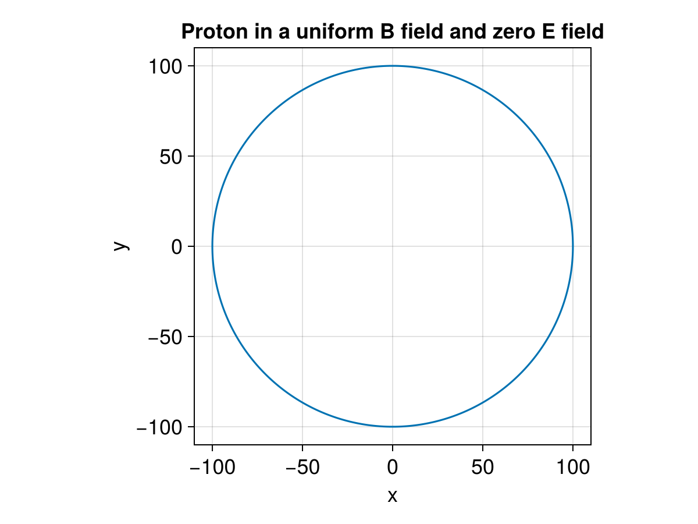

Energy Conservation


This example demonstrates the energy conservation of a single proton motion in two cases. The first one is under a uniform B field and zero E field. The second on is under a zero B field and uniform E field.
using TestParticle, OrdinaryDiffEq, StaticArrays
using TestParticle: ZeroField
import TestParticle as TP
using LinearAlgebra: ×
using CairoMakie
const B₀ = 1e-8 # [T]
const E₀ = 3e-2 # [V/m]
"""
f2
"""
location!(dx, v, x, p, t) = dx .= v
"""
f1
"""
function lorentz!(dv, v, x, p, t)
q2m, _, E, B = p
dv .= q2m*(E(x, t) + v × (B(x, t)))
end
### Initialize field
uniform_B(x) = SA[0, 0, B₀]
uniform_E(x) = SA[E₀, 0.0, 0.0]
zero_B = ZeroField()
zero_E = ZeroField()
"""
Check energy conservation.
"""
E(dx, dy, dz) = 1 // 2 * (dx^2 + dy^2 + dz^2)
### Initialize particles
x0 = [0.0, 0, 0]
v0 = [0.0, 1e2, 0.0]
stateinit = [x0..., v0...]
tspan_proton = (0.0, 2000.0);Uniform B field and zero E field
param_proton = prepare(zero_E, uniform_B, species = Proton)
### Solve for the trajectories
prob_p = DynamicalODEProblem(lorentz!, location!, v0, x0, tspan_proton, param_proton)
Ωᵢ = TP.qᵢ * B₀ / TP.mᵢ
Tᵢ = 2π / Ωᵢ
println("Number of gyrations: ", tspan_proton[2] / Tᵢ)
sol = solve(prob_p, ImplicitMidpoint(), dt = Tᵢ/15)
f = Figure(fontsize = 18)
ax = Axis(f[1, 1],
title = "Proton in a uniform B field and zero E field",
xlabel = "x",
ylabel = "y",
aspect = 1
)
lines!(ax, sol, idxs = (1, 2))

Zero B field and uniform E field
param_proton = prepare(uniform_E, zero_B, species = Proton)
# acceleration, [m/s²]
a = param_proton[1] * E₀
# predicted final speed, [m/s]
v_final_predict = a * tspan_proton[2]
# predicted travel distance, [m/s]
d_final_predict = 0.5 * tspan_proton[2] * v_final_predict
# predicted energy gain, [eV]
E_predict = E₀ * d_final_predict
prob_p = DynamicalODEProblem(lorentz!, location!, v0, x0, tspan_proton, param_proton)
sol = solve(prob_p, Vern6())
energy = map(x -> E(x[1:3]...), sol.u) .* TP.mᵢ;Predicted final speed
predicted final speed: 5.744086746808526e9 [m/s]
Simulated final speed
simulated final speed: 5.744086746808649e9 [m/s]
Predicted travel distance
predicted travel distance: 5.744086746808526e12 [m]
Simulated travel distance
simulated travel distance: 5.74408674677139e12 [m]
Predicted final energy
predicted energy gain: 1.723226024042558e11 [eV]
Simulated final energy
simulated final energy: 1.7232260240426318e11 [eV]
This page was generated using DemoCards.jl and Literate.jl.